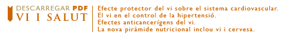

VI I SALUT
El vi sempre ha estat un aliment, segons molts científics i organismes internacionals com l’Organització Mundial de la Salut. No obstant, no fou fins la dècada dels 90 quan es començà a parlar dels efectes beneficiosos del consum moderat de vi, gràcies a un estudi coordinat per l’OMS a 16 països europeus.
CARACTERÍSTIQUES
Un miler de components, aproximadament, han estat identificats en el vi. Aigua i alcohol etílic són els més abundants i coneguts, però també hi trobem glicerol, àcid tartàric, àcid màlic, sucres reductors, potassi, magnesi, sodi, vitamines, polifenols i tanins, entre molts d’altres. Cada un d’ells compleix una missió i juga el seu paper, i segurament per això, Pasteur va arribar a la conclusió que es tracta de “la més higiènica i sana de les begudes”. Alguns són nutrients ben coneguts, altres són responsables d’aromes, sabors, textures i colors, i d’altres tenen importants efectes positius per la salut. Malgrat que encara desconeixem moltes coses, cada dia se sap més del vi i curiosament, cada vegada es descobreixen més efectes beneficiosos.
Perquè aquest producte, si es beu com cal, si es gaudeix amb ell i se sent com una part de la nostra cultura, és un important aliment que forma part de la Dieta Mediterrània, la qual sense vi, és menys “mediterrània” i més “dieta”.

FONTS
Vino y Nutrición
Revista de Actualidad Científica, Julio 2005
Fivin
Fundació per la Investigació del Vi i la Nutrició,
Ministeri d’Agricultura, Pesca i Alimentació


 @Marquès de Santa Ines Cellers Artesans
@Marquès de Santa Ines Cellers Artesans